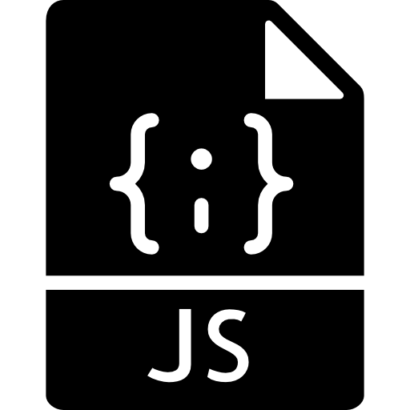
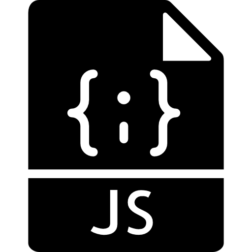

Salomão Nunes
TERESÓPOLIS · RJ · (+55) 21 98381-9698 · CONTATO@SALOMAONUNES.COM.BR
Sou um desenvolvedor full stack em início de carreira comprometido com as boas práticas de desenvolvimento e com o constante aprimoramento das metodologias e ferramentas utilizadas. Trago comigo a experiência do meio acadêmico/científico para seguir sempre em busca do cumprimento dos prazos determinados para os projetos e da organização desde a fase de planejamento das atividades.


Formação
CENTRO UNIVERSITÁRIO SENAC
TECNOLOGIAS E INOVAÇÕES WEB (Pós-graduação)
PROGRAMA DE PÓS-GRADUAÇÃO EM GEOLOGIA - UFRJ
MESTRADO NA ÁREA DE GEOFÍSICA
UNIVERSIDADE FEDERAL DO RIO DE JANEIRO - UFRJ
BACHARELADO EM GEOLOGIA (Graduação)
Habilidades
LINGUAGENS DE PROGRAMAÇÃO E FRAMEWORKS

 


WORKFLOW
- Mobile-First
- Design Responsivo
- Otimização para Buscadores (SEO)
- Testagem Cross Browser & Debugging
- Desenvolvimento Ágil e em Etapas
Interesses
Tenho um grande interesse em tudo o que envolve ciência e tecnologia, mesmo que de forma indireta. Além dos trabalhos que já desenvolvi como geólogo, e os atuais como desenvolvedor, gosto de dividir meu tempo livre entre atividades ao ar livre, jogos e aprender coisas novas.
Acho muito importante estar sempre cercado por ambientes e pessoas que proporcionem crescimento e trocas de experiências, seja desde um novo framework para trabalho até uma série que tenha sido lançada.
© Desenvolvido por Salomão Alencar Serra Nunes. 2020.